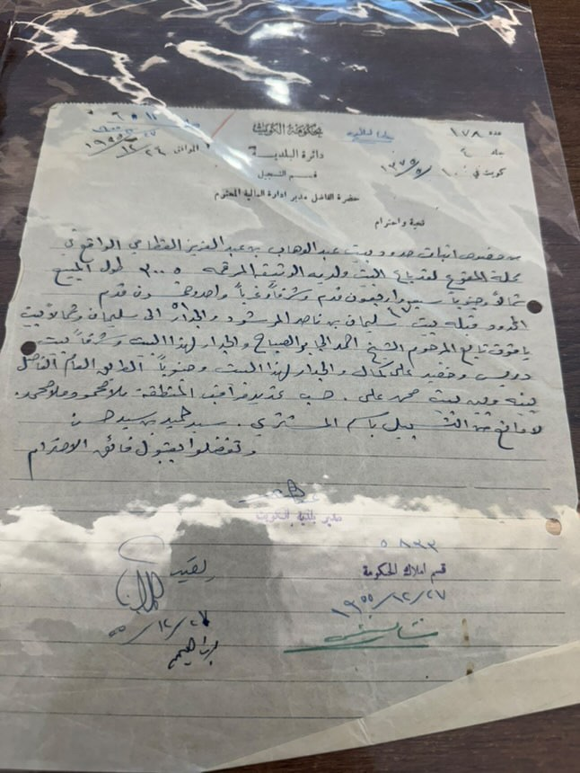
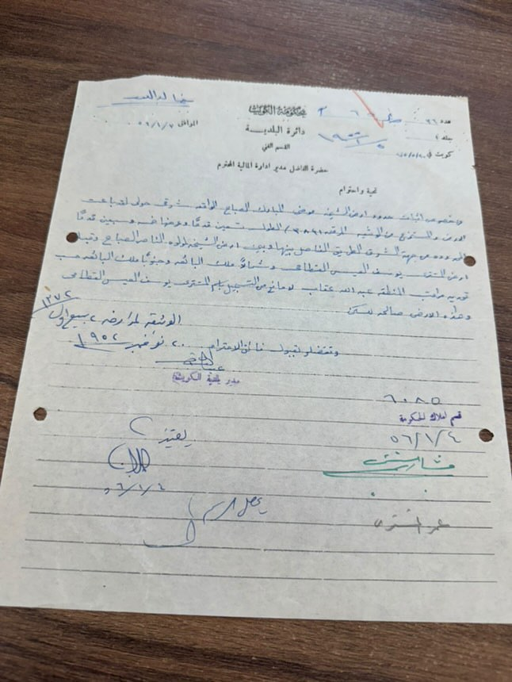
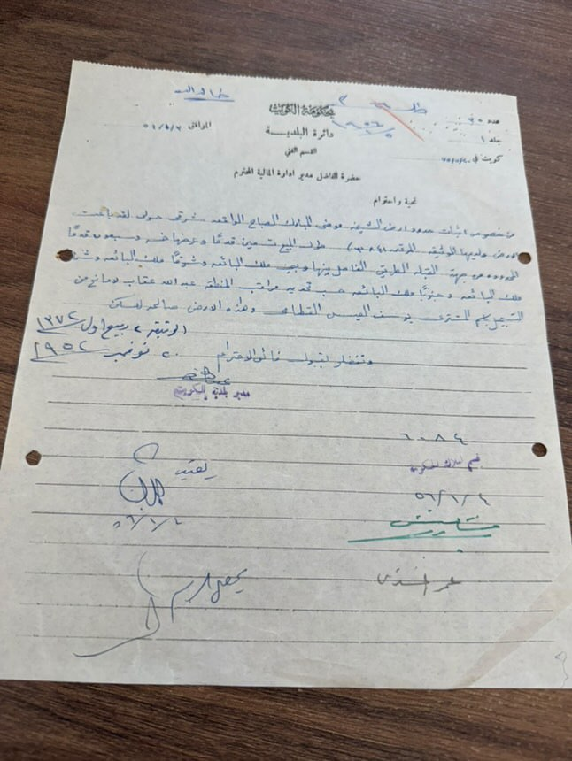
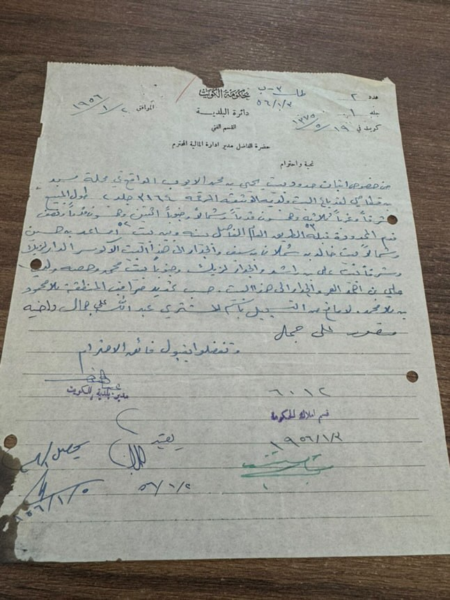

December 1955 and 1956 · Original letters, Government of Kuwait, Municipality Department, to the Director of the Finance Department
Kuwait Municipality letters on the boundaries of Al-Qatami property, 1955 and 1956
What it is
Letters signed by the Director of Kuwait Municipality asking the Finance Department to register property after its boundaries were confirmed, each stamped by the Government Properties Section. 1. The letter from the Registration Section, received on 27 December 1955, confirms the boundaries of the house of Abdulwahab bin Abdulaziz Al-Qatami, lists its neighbours, and asks for the house to be registered in the name of its buyer. 2. Two letters from the Technical Section in 1956 confirm the boundaries of a plot of land and ask for it to be registered in the name of the buyer, Yousef Al-Eissa Al-Qatami. 3. A third letter from the Technical Section in January 1956 concerns the house of Mohammed Al-Ayoub.
Why it matters
Original government papers showing Abdulwahab bin Abdulaziz Al-Qatami selling his house in 1955, and Yousef Al-Eissa Al-Qatami buying land in 1956, as Kuwait's property registration was being organised.
Page copies




Sources
Government of Kuwait, Municipality Department, letters to the Director of the Finance Department, December 1955 and 1956. Original letters in Noor Faisal Al-Qatami’s personal collection.
How this text was made: The letters are handwritten. The quarter names, plot numbers and the name of the buyer of Abdulwahab’s house are not read with certainty yet, and the family’s connection to the letter on the house of Mohammed Al-Ayoub is still to be confirmed.
Open in the interactive site